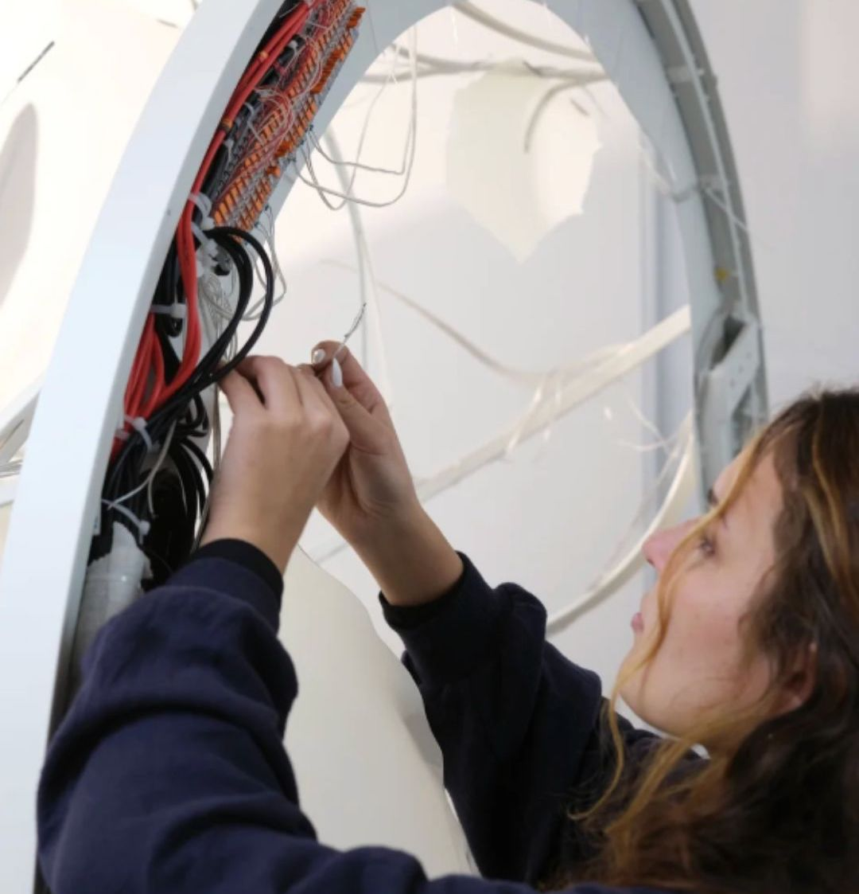

Woven Studio — Interaction Design Intern
Woven Studio builds large-scale artistic installations that make environmental data visible and tangible. Over six months I worked hands-on across fabrication, prototyping, and production — contributing to multiple parallel projects in a multidisciplinary team while meeting real client deadlines.
The Work
Working at Woven meant learning to move quickly across disciplines — from 3D modelling and sketching to metalworking, electronics integration, and material testing. Each project brought different constraints and required different hands-on skills.
In installation-based design, experimentation is the method. Behind every immersive piece are layers of prototypes, recalibration, and iteration.

Fabrication in the workshop

Team assembly

Electronics integration
Sensor Cases
Woven's installations make environmental data visible. But first, something has to collect it.
My main deliverable was designing and producing the sensor cases — weatherproof enclosures housing CO2, humidity, and dendrometer sensors that attach directly to trees. The cases needed to work outdoors, hold up over time, and not look out of place on a living tree.
The process: sketching → Fusion 360 modelling → iterative 3D printing → testing fit, clearances, and cable routing → final production.
The form isn't just functional. The rounded, clustered shape came from thinking about what should sit on a tree — something that feels considered rather than bolted on.

Ideation
Ideation

CAD to first print

Testing clearances

Prototype installed

In context

Final product deployed
Dutch Design Week
I presented Econario at Dutch Design Week — explaining the work and the ideas behind it to a wide range of visitors, from children discovering environmental data for the first time to adults engaging with the technology and ecology behind the piece.

Dutch Design Week presentation
Learnings
- Working directly in the workshop changed how I think about designing for physical production. Knowing how something is built before you model it saves time, materials, and decisions later.
- Iteration at the bench is fast and honest — the prototype tells you things a render never will
- Designing for outdoors means thinking beyond the screen: weather, material aging, and the living context are real constraints
Like what you see? Just want to connect?
Let's build something meaningful together :)
Copied!